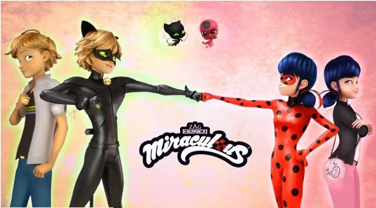
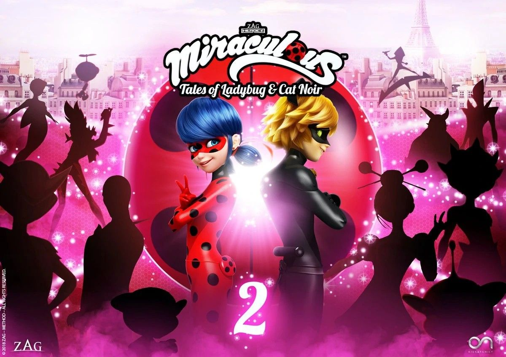
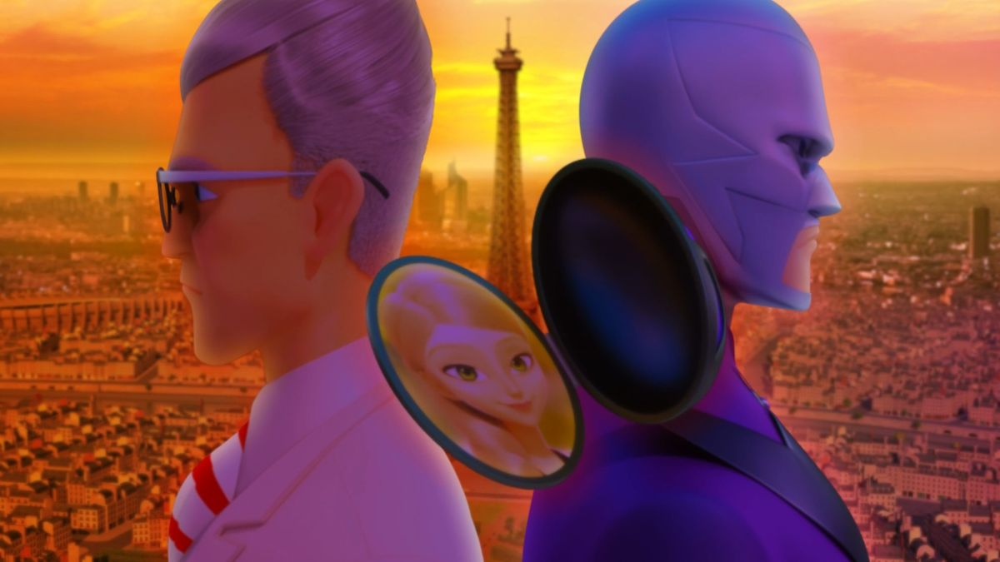
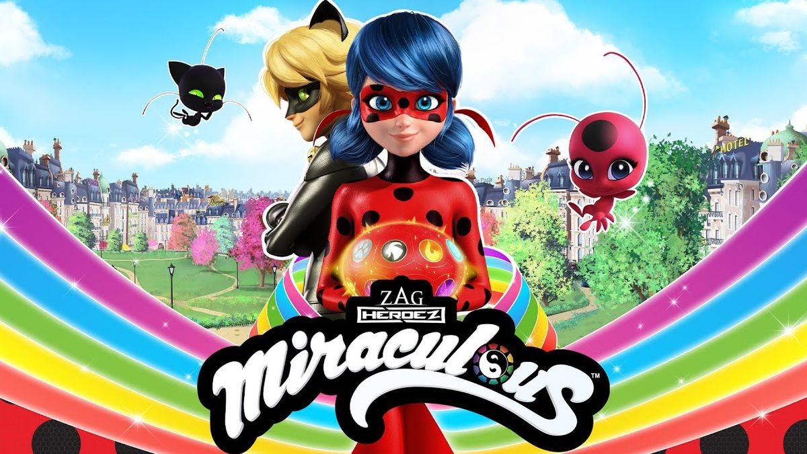
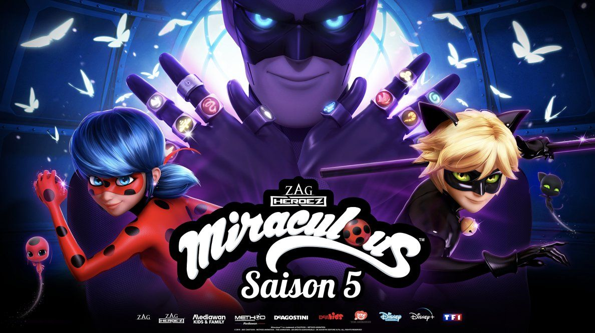
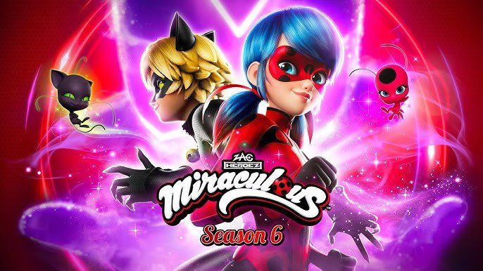

Temporada 1

Marinette es una chica súper torpe pero linda que obtiene el Miraculous de la mariquita y se convierte en Ladybug, mientras que Adrien, el chico “perfecto”, es Cat Noir. Lo bonito es ver cómo poco a poco aprenden a trabajar en equipo, aunque al inicio todo es medio caótico. Cada episodio trae un villano diferente creado por Hawk Moth usando emociones negativas, pero lo que más engancha es el inicio del enredo amoroso: Marinette ama a Adrien, pero Cat Noir está enamorado de Ladybug… y ninguno sabe quién es quién.
Temporada 2
Aquí ya no están solos y eso se siente increíble. Aparecen nuevos héroes como Rena Rouge y Carapace, y el equipo empieza a crecer. Marinette también empieza a tener más responsabilidad con el Maestro Fu, y se nota que va madurando. Hay más desarrollo emocional, más drama romántico (porque TODO se complica más), y se empieza a ver que la historia va hacia algo más grande que solo “villano del día”

Temporada 3

Se revelan cosas importantes (como la identidad de Hawk Moth, que duele más cuando entiendes sus razones). Marinette termina convirtiéndose en la nueva guardiana de los Miraculous, lo que cambia completamente su vida. También hay más tensión entre ella y Cat Noir, porque aunque se quieren, no logran entenderse del todo. El final es bastante emocional y deja todo listo para algo mucho más intenso.
Temporada 4
Hawk Moth evoluciona a Shadow Moth, y se vuelve mucho más peligroso. Marinette, como guardiana, carga con TODO y empieza a aislarse, lo que afecta muchísimo su relación con Cat Noir. De hecho, él se siente desplazado y eso duele bastante como fan. Hay más poderes, más estrategia y más drama emocional. Es una temporada donde los personajes crecen, pero también sufren bastante.

Temporada 5

Gabriel ahora es Monarch y tiene muchísimo más poder, así que el peligro es constante. La historia se vuelve más seria, más intensa y con decisiones fuertes. La relación entre Marinette y Adrien por fin avanza (¡al fin!), pero también hay sacrificios y momentos muy duros. El final cierra una etapa muy importante de la serie, con emociones mezcladas entre tristeza, alivio y satisfacción.
Temporada 6
Esta temporada se siente como un nuevo comienzo después de todo lo que pasó antes. Marinette sigue como guardiana, pero ahora más madura y con más peso encima, mientras que Adrien entra en una etapa más profunda por su historia personal. La relación entre ambos se siente más clara y menos confusa, pero igual con momentos intensos. Además, ya no hay un solo villano principal, lo que abre la puerta a nuevas amenazas y hace que la historia se sienta más grande y seria.
